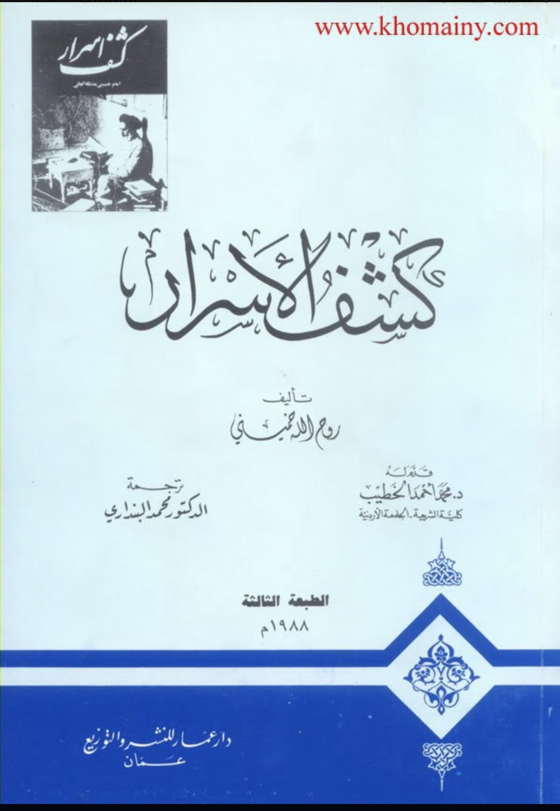
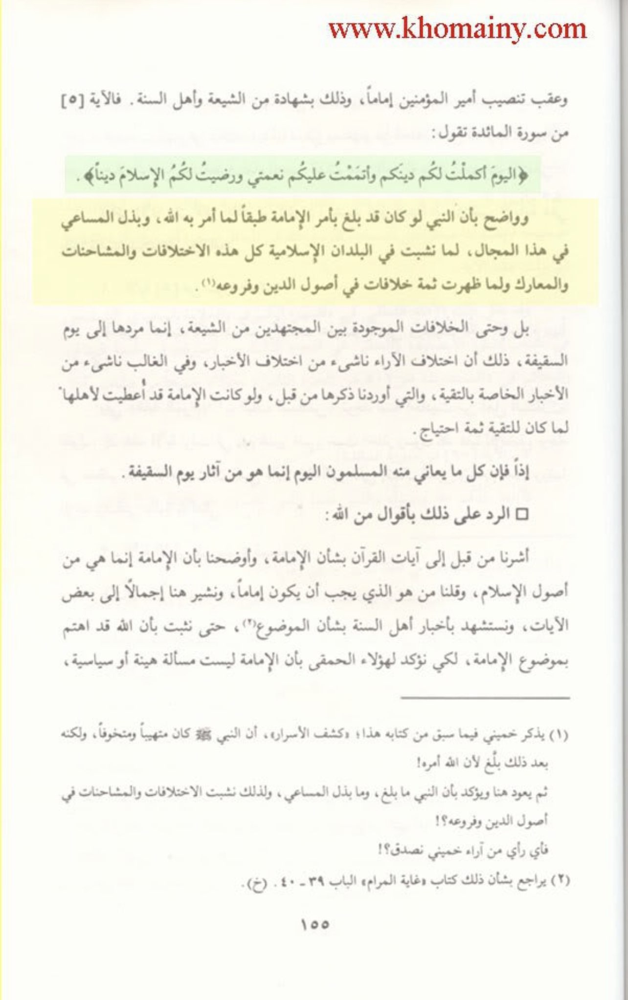

[This day have I perfected your religion for you, completed My favour upon you, and have chosen for you Islam as your religion.
But if any is forced by hunger, with no inclination to transgression, God is indeed Oft-forgiving, Most Merciful]
And it is clear that if the Prophet had delivered the message of Imamah as Allah ordered and if he had placed some effort in this matter,
many battles and conflicts would not have taken place in the Islamic world, nor would we have many differences
in the Usul and Furu’ of this religion.
Source: Kashf al Asrar
Comment:
This kafir essentially accused the Prophet of having flaws in his dawah and that he didn’t preach in accordance to what Allah commanded him
to and he also accuses the Prophet of not putting effort.
He himself admits that the Prophet never taught the early Muslims the core belief of Shi’ism, imamah.